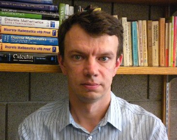

Department
of Mathematical Sciences
Carnegie Mellon University
Pittsburgh, PA 15213-3890
Office: Wean Hall 7105
Phone: +1-412-268-9782
Phone: +1-412-268-2545(Dept Secretaries)
Fax: +1-412-268-6380

| Oleg Pikhurko
Department
of Mathematical Sciences |

|
| 08/03- | Assistant and Associate Professor, Carnegie Mellon University |
| 10/00-08/03 | Research Fellow, St.John's College, Cambridge |
| 10/95-01/00 | Certificate of Advanced Study and PhD Degree in Mathematics, Cambridge University |
| 09/90-06/95 | Diploma in Mathematics, L'viv State University |
|
||||
|
||||
|